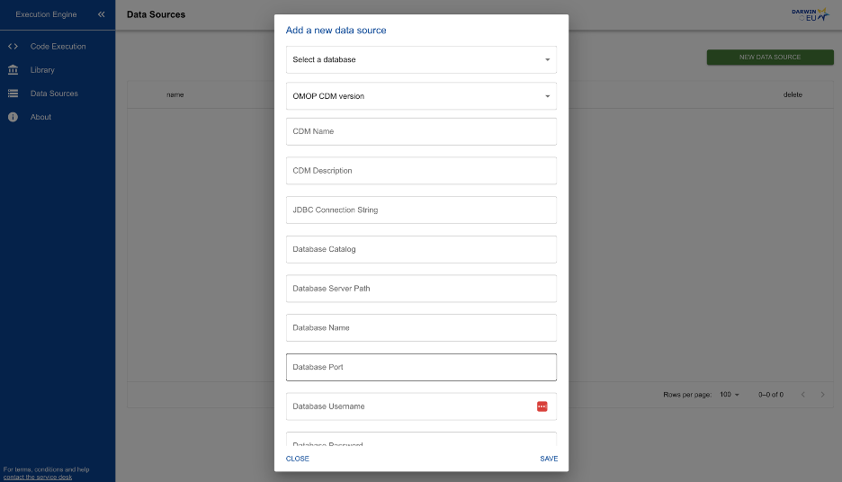

Installing Execution Engine
This page will walk through the steps to install and configure Execution Engine on Linux, Windows, and Mac OS. What you will need to succeed:
Admin permissions to install Docker
Ability to create folders and text files
Ability to run terminal/shell commands
First install Docker Desktop for your system using the instructions provided on the Docker website here: https://docs.docker.com/engine/install/
Next create a new directory/folder on your computer where you will put your configuration settings.
Choose how you would like to set up security. There are three options:
No security
Since execution engine requires direct access to databases to run analyses security is recommended. The “No security” option is suitable for testing or if another security/login method is already in place.
To install Execution Engine without security simply copy and paste the following YAML into a new text file in your executionengine folder named compose.yml. You may choose to alter some of these settings if you with. Common changes might be setting AUTH_ENABLED=true in order to enable Open ID Connect. You might also want to change the database credentials and the 32 character string that is use as the ENCRYPTION_KEY . You should not need to change anything else but if you are familiar with Docker go right ahead and make the adjustments you need to the compose.yml file.
version: '3.8'
services:
engine-ui:
image: "executionengine.azurecr.io/execution-engine-ui:dev"
ports:
- "4200:4200"
environment:
- BACKEND_BASE_URL=http://localhost:8083/api/v1
- AUTH_ENABLED=false
# Required if you enable Open ID authentication by setting AUTH_ENABLED=true
# - OIDC_AUTHORITY=https://login.microsoftonline.com/1234-34532-34534/v2.0
# - OIDC_CLIENT_ID=2234e6c40-3451-49c6-a99e-234b8fff36a4b
# - OIDC_REDIRECT_URI=http://localhost:5173/deck-portal
engine-api:
image: "executionengine.azurecr.io/execution-engine-api:dev"
restart: always
ports:
- "8083:8083"
environment:
- SPRING_DATASOURCE_USERNAME=postgres
- SPRING_DATASOURCE_PASSWORD=postgres
- SPRING_DATASOURCE_URL=jdbc:postgresql://engine_db:5432/execution_engine
- AUTHENTICATION_ENABLED=false
- ENCRYPTION_KEY=PleaseEnterANew32CharacterString
volumes:
- ./studies:/app/files
- /var/run/docker.sock:/var/run/docker.sock
networks:
- execution_network
depends_on:
db:
condition: service_healthy
db:
container_name: engine_db
image: "postgres:15.4"
restart: always
environment:
- POSTGRES_DB=execution_engine
- POSTGRES_USER=postgres
- POSTGRES_PASSWORD=postgres
networks:
- execution_network
volumes:
- db-data:/var/lib/postgresql/data
healthcheck:
test: [ "CMD-SHELL", "pg_isready -U postgres" ]
interval: 10s
timeout: 5s
retries: 10
networks:
execution_network:
name: execution_network
volumes:
db-data:Once you have saved the compose.yml file open a terminal, shell, or command prompt and navigate to the executionengine folder you just created. Run the following docker command.
{bash, eval=FALSE} docker compose up -d
This tells docker to pull all of the necessary applications to start up the application. Note that this will not download any R runtime environments. If you are preparing an environment for offline execution then you will need to be sure to pull your images from the internet (wherever you R runtime images are located) down onto your local machine. Note that you may need to put these images on a USB drive to transfer them to an air-gapped computer.
After running docker compose up -d and waiting a few minutes your instance of the Execution engine should be live at http://localhost:4200.
Configure Data Sources
The first thing you will want to do is configure access to one or more data sources in the OMOP Common Data Model (CDM) format. To do this go to the “Data Sources” tab and click the “New Data Source” button.

Make sure to fill out as much information as you have about your data source. A “data source” represents a single OMOP CDM instance. For example, if you have three OMOP CDMs in a single database you will need to add three data sources, one for each OMOP CDM instance.
The values that you put in the form will be saved in the execution engine’s internal database. The password will be encrypted. The values will then be made available in R code as environment variables.
For example if your CDM Name is “Synpuf 100k”, R programmers will be able to access this value in their code using Sys.getenv('CDM_NAME') .
The database related environment variables available for R programmers are:
| Data Source Field | Environment variable | Description |
|---|---|---|
| “Select a database” | DBMS_TYPE | The database management system: postgresql, redshift, sql server, oracle, snowflake, spark |
| CDM Name | DATA_SOURCE_NAME | The name of the CDM |
| OMOP CDM Version | CDM_VERSION | The version of the OMOP CDM being used. Either 5.3 or 5.4 |
| JDBC Connection String | CONNECTION_STRING | The JDBC connection string often used when connecting to the database with DatabaseConnector. |
| Database Catalog | DBMS_CATALOG | Some databases have a compound schema (e.g. catalog.schema). For example SQL Server usually has something like cdm53.dbo for the full schema name. This field can be left blank if you do not need it. |
| Database Server | DBMS_SERVER | The database server name (e.g. pgsqltest1.abcd1234.us-east-1.rds.amazonaws.com) |
| Database Name | DBMS_NAME | The name of the database used to connect. |
| Database Port | DBMS_PORT | The port of the database used to connect. |
| Database Username | DBMS_USERNAME | The username used to connect to the database. |
| Database Password | DBMS_PASSWORD | The password used to connect to the database. |
| CDM Schema | DBMS_SCHEMA | The name of the schema that contains the OMOP CDM. |
| Target Schema | TARGET_SCHEMA | A schema where the user has write access. |
| Result Schema | RESULT_SCHEMA | A schema where the user has write access. |
| Cohort Table Name | COHORT_TARGET_TABLE | The name of a table to use to store cohorts. |
Important: All of these variables are optional and R study programmers have the option to use them or not in their R code. If the variable has not been set then the environment variable Sys.getenv('CDM_NAME'), will, by default, return the empty string ““.